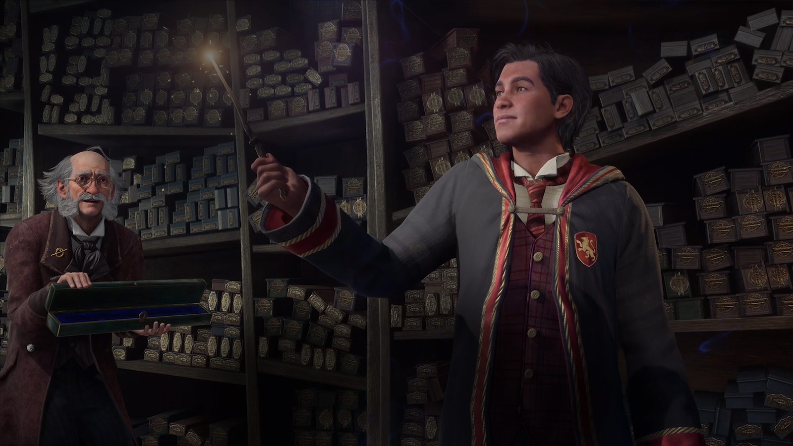

Pengantar

Siapa sih yang tidak kenal dengan franchise novel Harry Potter karya J. K. Rowling. Cerita fiksi yang menceritakan
petualangan Harry Potter di dunia penuh sihir yang tersembunyi dari publik telah memberikan banyak memori nostalgia
bagi para penggemarnya dari dulu hingga sekarang. Apalagi dengan adaptasi filmnya yang membuat franchise ini semakin
populer bagi anak-anak yang menontonnya tahun 2000-an
Kepopuleran franchise Harry Potter turut dihadirkan dengan banyak adaptasi video game, baik itu berdasarkan novel,
film maupun original story dan karakternya. Namun satu hal pasti apa yang diinginkan para gamer maupun penggemarnya
dalam adaptasi game Harry Potter. Mereka menginginkan game tersebut bisa memberikan bagaimana rasanya menjadi penyihir
bersekolah di Hogwarts dan melakukan eksplorasi serta petualangan fantasi di dunia sihir tersebut.
Nah, untuk mewujudkan game yang diinginkan oleh gamer dan juga penggemar franchise karya J. K. Rowling tersebut, developer
Avalanche Software membuat game baru berdasarkan dunia sihir seri Harry Potter berjudul Hogwarts Legacy. Game ini menjanjikan
pemain akan menjadi seorang penyihir baru bersekolah di Hogwarts dengan banyak petualangan dan misteri yang akan mereka
temukan nantinya.
Pada kesempatan kali ini, kami akan memberikan review game Hogwarts Legacy yang sedang dinantikan oleh para gamer terlebih
penggemar franchise Harry Potter. Kami mengucapkan terima kasih kepada developer Avalanche Software dan publisher Warner Bros.
Games yang telah memberikan kesempatan kepada kami untuk mencoba game Hogwarts Legacy di PC lebih awal.
Story

Hogwarts Legacy mengambil setting cerita pada tahun 1890 berfokus pada seorang murid penyihir baru yang akan bersekolah di
Hogwarts dan masuk pada kelas tahun ke-5. Pemain akan mengendalikan penyihir baru ini dan melakukan berbagai macam aktifitas
sekolah di Hogwarts, mulai dari belajar menggunakan sihir, membuat ramuan, latihan terbang dengan sapu terbang dan masih
banyak lagi.
Namun dibalik dari aktifitas sekolah, sang Protagonist harus menghadapi sebuah misteri dimana dia menjadi kunci penting
dalam mengungkap rahasia Ancient Magic. Sihir tersebut telah lama dilupakan dan jika seseorang mendapatkannya dan
menggunakannya dengan tujuan jahat dapat mengancam keseimbangan dunia sihir. Tentu saja ada pihak lain yang ingin
mendapatkan Ancient Magic tersebut untuk memanfaatkannya secara salah.
Gameplay
Gameplay Hogwarts Legacy menghadirkan fitur permainan action RPG. Pemain akan mengendalikan karakter seorang penyihir
baru yang akan bersekolah di Hogwarts. Sebagai murid baru, pemain akan melakukan berbagai aktifitas belajar sebagai penyihir
dari pagi sampai malam seperti yang ada di novel maupun film dari franchise Harry Potter.
Di luar dari aktifitas sekolah, kalian bisa melakukan berbagai hal dalam game, mulai dari eksplorasi sekolah Hogwarts menemukan
berbagai macam rahasia, melakukan side quest dari karakter NPC, memecahkan puzzle dan lainnya. Tidak hanya di sekolah saja,
kalian juga bisa melakukan eksplorasi di luar Hogwarts berkat fitur open world yang sangat luas dengan banyak rahasia bisa
kalian temukan. seperti gua harta karun, camp penjahat, memecahkan Merlin’s Trial dan masih banyak lagi.
Kalian nantinya juga bisa mempelajari dan menggunakan berbagai macam sihir dalam menghadapi musuh, memecahkan puzzle dan
melakukan misi secara diam-diam. Beberapa sihir basic yang bisa kalian gunakan dalam game seperti
revelio, lumos, levioso, expelliarmus, dan masih banyak lagi.
Di luar dari aktifitas sekolah, kalian bisa melakukan berbagai hal dalam game, mulai dari eksplorasi sekolah Hogwarts menemukan
berbagai macam rahasia, melakukan side quest dari karakter NPC, memecahkan puzzle dan lainnya. Tidak hanya di sekolah saja,
kalian juga bisa melakukan eksplorasi di luar Hogwarts berkat fitur open world yang sangat luas dengan banyak rahasia bisa
kalian temukan. seperti gua harta karun, camp penjahat, memecahkan Merlin’s Trial dan masih banyak lagi.
Dari segi battle, Hogwarts Legacy hadirkan fitur pertempuran yang tentunya menggunakan sihir. Pemain akan bisa menggunakan
sihir menyerang, bertahan dan juga melakukan serangan balik ke musuh. Nantinya akan ada 4 slot untuk bisa menggunakan sihir
khusus yang memiliki fungsinya masing-masing. Dengan banyaknya sihir yang dihadirkan dalam game, kalian bisa melakukan
berbagai macam combo ketika menghadapi musuh.
Tidak lupa juga elemen RPG dimana pemain bisa menaikkan level dan membuka berbagai macam kemampuan untuk meningkatkan fungsi
dari sihir maupun efek yang digunakan. Sistem equipment juga turut hadir mulai dari baju, aksesoris, jubah dan topi sihir
yang akan memberikan efek tambahan untuk status Offence (Attack), Defense dan juga Health.
Graphics dan Sound
Graphic Hogwarts Legacy hadir dengan grafis yang luar biasa, mulai dari model karakter, environtment atau pemandangan dunia
bahkan sampai efek yang muncul dari sihir. Salah hal yang paling mencolok dalam game ini adalah tampilan grafis terhadap
environtment di setiap lokasinya.
Dengan tampilan grafis seperti ini akan semakin bagus berkat ditambahkan suasana hidup dari para karakter NPC. Di setiap
lokasi, kalian akan melihat banyak karakter NPC melakukan aktifitas mereka masing-masing, baik itu sedang berbicara dengan
lawan bicara, latihan sihir dan lainnya.
Sound yang ada di Hogwarts Legacy hadir dengan berbagai macam Soundtrack khas orkestra yang akan membuat kalian hanyut dan
terbawa ke suasana dunia yang penuh sihir dalam game. Dari suasana Hogwarts maupun di dunia luar, kalian akan disuguhkan
musik merdu, intens dan mencekam sesuai dengan suasananya.
Kalian juga akan menemukan beberapa lagu atau Soundtrack yang terasa sudah tidak asing bagi penggemar Harry Potter yang
sudah menonton filmnya. Salah satunya adalah lagu berjudul Hedwig’s Theme yang menjadi tema musik untuk sekolah Hogwarts
dengan aransemen baru namun tetap mempertahankan versi originalnya. Selain itu, beberapa list soundtrack original dari
gamenya pun sangat sesuai dengan temanya.
Kesimpulan

Setelah mencoba bermain game Hogwarts Legacy, kesan saya terhadap game ini sangat positif. Apalagi jika kalian penggemar
franchise Harry Potter seperti saya. Itu karena Hogwarts Legacy hadir dengan banyak sekali konten yang memberikan fanservice
untuk para penggemarnya.
Dari segi cerita, gameplay, grafis, soundtrack dalam game dibuat dengan baik oleh developer Avalanche Software. Cerita yang
seru dengan penuh misteri, sistem battle yang seru dimana pemain bisa menggunakan berbagai macam sihir ikonik, grafis
pemandangan yang luar biasa, dan soundtrack yang bisa membuat pemain hanyut dalam dunia sihir. Tidak heran jika saya menyebut
game ini menjadi fanservice bagi penggemar novel ataupun film dari franchise Harry Potter karya J. K. Rowling.